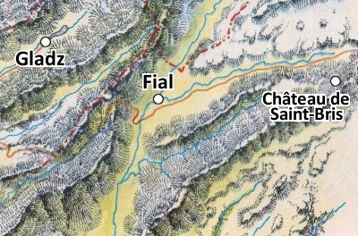

Le village de Fial
Fial est situé à moins de cinq kilomètres au sud du duché d'Agramor et à six kilomètres à l'est de la fédération des comtés d'Egonzasthan, du comté de Gladz plus précisément. Le Saril, un cours d'eau qui provient d'Agramor, est rejoint à l'entrée du village par le Parimoc, qui descend des montagnes à l'est, puis continue son cours tranquille en direction du sud, vers la plaine des Oliviers.
Niché au creux de la grande vallée du Saril, Fial appartient au fief du chevalier de Saint-Bris. Son domaine est délimité au nord par le Parimoc, à l'est par la crête de la chaîne de montagne surplombant la vallée, et à l'ouest par la crête limitrophe avec le comté de Gladz. Un des aïeux du chevalier de Saint-Bris a reçu ce territoire de la part du duc d'Agramor il y a de nombreuses années, en récompense de sa participation décisive dans la première « guerre d'épuration du sang » qui a chassé les hordes d'orcs et de gobelins du duché.
La vallée du Saril est très fréquentée car elle constitue l'unique route plus ou moins sûre pour se rendre au sud depuis les provinces de Kaoca, Azilian, Agramor ou Egonzasthan. Plus à l'ouest les montagnes sont difficiles à franchir, et les territoires sauvages à l'est sont des plus périlleux pour une caravane marchande. Les hommes d'armes du chevalier de Saint-Bris garantissent au moins aux voyageurs un minimum de sécurité au nord de la vallée. De plus le village est situé à proximité de la principale route, provenant d'Egonzasthan-la-basse, qui relie les provinces de Laelith à l'ouest aux steppes herbeuses du Shaar à l'est. Grâce à cette fréquentation, Fial peut s'enorgueillir de posséder une grande auberge-relais, fait plutôt rare pour une agglomération de si petite dimension.
Organisation
QUI EST PROPRIÉTAIRE DE QUOI ?
Les terres du village de Fial appartiennent au chevalier de Saint-Bris, en conséquence de quoi ce seigneur est autorisé à prélever des impôts sur tout ce qui provient de ses terres, cultures et gibiers principalement.
Le village est donc soumis à l'autorité du chevalier de Saint-Bris. Réputé pour sa bonté, il est le vassal d'Uleiric III, duc d'Agramor. Son château étant situé sur un pic surplombant le Parimoc, à pratiquement une journée de marche plus à l'est, Saint-Bris a nommé à Fial un régisseur, Gérald de Flamberge, pour veiller sur ses intérêts, notamment la levée des impôts et des taxes. Thron, le forgeron, fait office de chef à Fial. C'est lui qui représente les villageois face au régisseur. Fial compte 423 âmes à ce jour, humains pour la plupart. Mais quelques familles de halfelins, demi-elfes et gnomes y sont également présentes et apportent une petite touche d'exotisme au village.
Les taxes prélevées par le régisseur au nom du chevalier sont nombreuses. Les paysans payent tout d'abord le cens, une sorte de loyer pour le fait de loger sur une terre de Saint-Bris. Ensuite ils doivent s'acquitter du champart, qui est en fait un don avoisinant les 1/10ème de la récolte. Puis vient la dîme, qui est un impôt reversé au culte de Chauntéa. Enfin, il y a les banalités, ces taxes que chacun paye pour l'utilisation des abattoirs, du four ou du moulin, qui sont la propriété du seigneur.
La vie au village
La majorité des habitants de Fial sont des paysans installés autour du village et qui vivent au rythme des saisons : moisson en été, semailles en automne et au printemps, etc... Mais les terres sont pauvres, l'engrais inconnu, et les récoltes sont donc souvent mauvaises. Au gré des années, famines et épidémies ont décimé le village, mais chaque jour continue de suivre le même rituel immuable et monotone. Dès l'aube, il faut traire le bétail avant de l'emmener au pâturage. Femmes et enfants s'occupent des troupeaux, alors que les hommes vont travailler aux champs. Le soir, les veillées sont courtes et le sommeil est lourd.
La forêt à l'ouest de Fial est à la fois l'ennemie et l'alliée du paysan. L'ennemie, parce qu'il faut souvent recourir au défrichement pour aménager les champs qui permettront au village de subsister, et pour les brigands de grands chemins et ses bêtes féroces comme les ours et les loups. Mais la forêt est aussi le rempart du village. Elle protège la communauté des agressions extérieures car elle est redoutée par tous. Sans compter qu'elle fournit des matériaux de construction et du bois de chauffage. Avec elle, la vie est difficile. Sans elle, elle serait impossible.
Illustration tirée de la BD les "Aigles Décapitées", reproduite avec l'aimable autorisation des Éditions Glénat
Histoire récente
La vie du village fut récemment et de manière inattendue bouleversée par la réapparition d’Anne Arcienne, une jeune femme de tout juste 30 printemps qui est née à Fial. Elle avait quitté sa bourgade natale à douze ans. Son retour l'année dernière pour retrouver sa mère, après tout ce temps sans aucune nouvelle d'elle, étonna tout le monde. D'autant plus qu'elle avait une noble allure et portait un bébé. À ses côtés, ce fier guerrier du désert de l’ouest qui ne quitte jamais ses deux cimeterres ajouta au trouble. Mais la stupeur fut complète lorsqu'elle présenta une lettre de cachet signée par le duc d'Agramor en personne. Cette missive lui octroyait la propriété du manoir de Fial, ainsi que la moitié des banalités du village.
Dame Arcienne, c’est ainsi que tous la nomment désormais, vit donc maintenant au manoir, une belle demeure située sur la route d'Agramor, avec une enceinte fortifiée, des écuries et un bâtiment à part pour les domestiques, simplement mais confortablement. Elle y élève son fils avec l’aide de sa mère, une femme au fort caractère, et de Sophie, une jeune orpheline du village qu’elle a prise sous son aile. Tous sont protégés par le guerrier maure qu'Anne appelle le « capitaine ».
En fait, Anne fut recueillie et élevée à Laelith par l'Académie royale du bel art et devint une courtisane experte. Toutefois la dernière mission qui lui fut confiée tourna court. Alors qu’elle devait approcher dans la cité sainte l’ambassadeur de Manshaka, un parent de la famille régnante de cette ville située à l'ouest, bien au-delà des Marches du Couchant, les deux jeunes gens tombèrent amoureux. Mais leur idylle fut de courte durée, car au même moment le prince de Manshaka fut déchu et toute sa famille exécutée. L'ambassadeur de la principauté à Laelith fut pour sa part arrêté et emprisonné par les autorités, qui tiennent à tout prix à préserver de bonnes relations avec la cité du désert, quel que soit son dirigeant. La jeune épouse dû alors fuir la ville précipitamment, enceinte, et protégée par Assim, le « capitaine ».
Le village
Illustration originale de Maxime Plasse
1. Maison d'Elloie Fraobe. Demeure d'un magicien vieillissant qui préfère maintenant former des apprentis plutôt que de partir lui-même à l'aventure. Elloie a en effet eu une vie bien remplie et aime à raconter ses aventures passées.
2. Tour de guet. Cette tour a été bâtie il y a fort longtemps, lors de la première guerre d'épuration du sang contre les orcs et les gobelins, puis a été ensuite laissée à l'abandon. Elle offre toutefois encore aujourd'hui un excellent point de vue sur la vallée et sur le village.
Muldar
3. Abattoirs. À Fial comme dans tous les autres villages, il est interdit aux villageois d'abattre une bête sans l'accord exprès du seigneur. Chaque animal tué doit donc l'être aux abattoirs et fait l'objet du versement d'une taxe, que perçoit le régisseur de Saint-Bris au nom de son seigneur. Muldar, le responsable de l'abattoir, est un homme d'une quarantaine d'années qui a longtemps été mercenaire dans les armées du Duc et qui adore son métier. Il a la réputation d'être le meilleur chasseur du village, mais est également désagréable et violent de nature, et peut se montrer dangereux une fois qu'il a bu. Sa présence à l'auberge est donc redoutée. Il vit dans une petite maison coquette avec sa femme et ses trois enfants, qui travaillent avec lui à l'abattoir.
4. Atelier de Petit-Pinpin. Ce jeune roublard halfelin bon vivant possède ici un atelier de serrurerie. Quelques cicatrices sur son visage laissent deviner que sa vie n'a pas toujours été aussi tranquille qu'elle l'est aujourd'hui avec sa petite famille. Lui assure qu'il a combattu des créatures monstrueuses dans des souterrains obscures et trouvé de nombreux trésors. C'est l'amour qui lui a fait mettre sa vie d'aventurier de côté.
TARIF DES CHAMBRES (par personne)
Salle commune : 4 pa
Chambre de 3 lits : 8 pa
Chambre de 2 lits : 12 pa
Cheval à l'écurie : offert, mais sans surveillance
TARIF DE LA CARTE
Chope de bière : 5 pc
Pichet de vin : 2 pa
Bouteille de la réserve : 12 po (excellent !)
Petit déjeuner : 3 pa
Plat du jour (suivant la saison) : 5 pa
Plat froid : 3 pa
Lapin à la bière (toutes saisons) : 8 pa
5. L'auberge du Taureau Gris. Ce relais accueille les voyageurs et pèlerins qui empruntent la route de l'est. L'auberge est propre et bien tenue, mais ses tarifs sont tout de même élevés pour un village de cette taille. Seuls de riches négociants ou des aventuriers peuvent s'offrir une chambre pour la nuit, les autres voyageurs se contentant de dormir dans l'étable du village. La spécialité de l'auberge est le lapin à la bière. Gunther, l'aubergiste, est un homme blond un peu grassouillet toujours de bonne humeur, âgé de 38 ans. Il vit au premier étage de son auberge avec sa femme Diana, qui tient la cuisine. Leur fils aîné de 17 ans aide à l'auberge, et le couple a également deux petites jumelles. Gunther a caché ses économies sous un des tonneaux de son cellier. L'aubergiste est un bon vivant, il adore la bière (qu'il produit lui-même) et est également un chaud lapin. Il n'hésite pas à essayer de séduire les personnes du sexe faible qui entrent dans son établissement pendant que sa femme s'affaire à la cuisine.
6. Maison du régisseur. Le régisseur est un fonctionnaire du chevalier de Saint-Bris chargé de veiller à ce que les taxes de son maître soient bien perçues et supervise toutes les activités du village. Les impôts sont envoyés au château une fois par mois, et en attendant, marchandises et argent sont conservés dans la cave de la maison. Gérald de Flamberge, un homme d'âge bien mur à l'impressionnante stature et au regard sévère, prend à cœur sa charge de régisseur. Dévoué jusqu'au fanatisme à Saint-Bris, il passe ses journées à inspecter les terres qui sont sous sa juridiction. Il vit avec sa femme et ses trois filles, et ne dispose que de deux soldats pour faire régner l'ordre. Il est bien sûr redouté par les villageois qui se méfient de sa présence dans leurs affaires.
Olias
7. Chapelle de Chauntéa. Ce petit temple, dont le grenier sert souvent de silo, est consacré à Chauntéa, la déesse de l'agriculture, vénérée par la plupart des paysans à Fial. La statue de marbre à l'intérieur, haute de 3 mètres, la représente en train de semer. Les offices ont lieu deux fois par semaine le dimanche matin et le mercredi soir. Tous les habitants y sont conviés et ne pas y assister attire à coup sûr le mauvais oeil, c'est du moins ce que prétend le prêtre. En cas d'attaque de pillards, les villageois viennent s'abriter dans la chapelle dont l'enceinte fortifié percée de meurtrières se prête parfaitement à une défense acharnée. Olias, le prêtre, clerc de la Nature, est un petit homme grassouillet et débonnaire adoré par tous, âgé de 57 ans. Il essaye, tant bien que mal, d'éduquer les enfants du village. Il vit dans une des annexes de la chapelle et s'adonne en cachette à la bouteille, mais avec modération. C'est là, et non pas à l'intérieur de la chapelle, qu'il garde les contributions des villageois au culte de Chauntéa.
8. Scierie. La berge orientale du Saril accueille une grande forêt. Plusieurs bûcherons y coupent les arbres et les descendent jusqu'à la scierie de Fial en empruntant des barges ou en laissant flotter les troncs. Il est alors fréquent que ceux-ci endommagent le pont, sans avoir la force de le casser toutefois, le courant du Saril étant plutôt tranquille.
Thron
9. Forge. La forge est le lieu où l'on vient ferrer les chevaux et les bœufs, mais elle est aussi utilisée pour la fabrication des outils (socs de charrues, faux, etc) et de quelques armes qui sont revendues aux voyageurs de passage. Le forgeron de Fial est reconnu pour la qualité de ses haches notamment. Le chevalier de Saint-Bris perçoit une taxe sur tout ce qui est produit par la forge. Thron, le forgeron, un grand gaillard musclé et barbu de 45 ans, est un ancien armurier du duc d'Agramor. Il vit ici avec sa femme et ses cinq enfants dont Lanéa, sa fille de 18 ans. Thron est connu dans tout le village pour sa bonne humeur, sa joie de vivre, et sa faculté à vider un tonneau de bière comme si de rien n'était. Il fait également office de chef à Fial, représentant les villageois et leurs intérêts face au régisseur de Saint-Bris.
10. Bazar. Unique famille gnome de Fial, les Mac-Griver ont monté le premier bazar du village. On y trouve tout le matériel courant qu'un aventurier pourrait nécessiter. Le gnome ne vend toutefois aucune arme ni armure dans son échoppe, mais loue des ânes et des mules qui offrent bien des services pour un prix modeste.
Sélène
11. Écuries. Ici on soigne les chevaux, on leur donne à manger, bref, on s'en occupe pendant que leurs propriétaires vaquent à d'autres occupations dans le village. La propriétaire, Sélène, une jolie demi-elfe qui vit seule avec sa mère, humaine, loue également des couches à prix modique aux voyageurs pour la nuit.
12. Cabane de Cornic. Un peu à l'écart du village, pas très sociable, le vieux druide Cornic est installé là depuis plus de dix ans maintenant. Il tente tant bien que mal de freiner les ardeurs des bûcherons afin de limiter les dommages sur la nature environnante, mais n'a malheureusement que peu de soutien au village, les habitants de Fial le considérant plutôt comme un ermite à moitié fou. Il élève des porcs.
13. Ferme des Valentins. Les Valentins peuvent se vanter d'avoir la plus grosse ferme du village. Ils sont toutefois loin d'être riches, l'agriculture n'étant pas source de gros revenus, mais ce sont assurément les plus importants utilisateurs du moulin.
Erdrios
14. Moulin. C'est ici qu'est moulu tout le grain (blé, orge, seigle, maïs, avoine) des récoltes du village. Ce moulin appartient à Saint-Bris et le meunier prélève 20 % sur tout ce qu'il moud. Une moitié de ce prélèvement constitue son salaire, l'autre est reversée au seigneur. Erdrios, le meunier, est un vieillard de 60 printemps qui vit ici avec sa jeune femme de 25 ans, Ulia, sa fille de 7 ans et ses deux fils de 2 et 4 ans. Son tempérament irascible fait qu'il est souvent soupçonné par les villageois de prélever plus que son dû sur les sacs qui passent entre ses mains. Avare à l'extrême, il dissimule un coffre contenant toute sa fortune sous une dalle amovible située au pied de la meule.
15. Maison de Scyp. Cet homme très poli et courtois entretient le mystère autour de lui. Il est arrivé il y a six mois, a acheté une petite maison, et n'en sort que rarement, restant dans tous les cas très discret, presque muet. Personne ne sait de quoi il vit, vu qu'il ne travaille pas mais semble mener un train de vie aisé. Chaque trois semaines il se rend quelques jours à Egonzasthan-la-basse. Assassin venu à Fial pour se faire oublier un temps, il n'a rien à voir avec l'affaire de Dame Arcienne.
Rapport de force actuel
La guilde des courtisanes. Lorsque l'Académie royal du bel art découvrit qu’Anne portait en elle un possible héritier de la famille princière de Manshaka, il fut décidé de préserver cet atout. La courtisane fut donc envoyée à Fial et, une à deux fois l’an, un autre membre de la guilde lui rend visite afin de s’assurer que tout va bien, mais plus particulièrement pour vérifier la bonne éducation de l'enfant. De plus, comme l'Académie du bel art craint pour la vie de l’enfant, elle a fait doubler la surveillance, et Sélène, la demi elfe des écuries, a été recrutée à la hâte pour surveiller les mouvements au village. Anne n'est pas au courant.
Le temple du crâne de Laelith. Maxime, agent administratif au temple du Crâne, a été envoyé à Fial pour s'occuper du cadastre. C'est un jeune homme inexpérimenté, un peu timide mais très sympathique, qui dort dans la chapelle. Anne est persuadée qu'il travaille pour les nouveaux gouvernants de Manshaka, Saint-Bris ne doute pas une seconde qu'il est envoyé par la duchesse pour le surveiller, et Sélène le voit comme une menace potentielle. Maxime, lui, n'est au courant de rien. Son supérieur à Laelith lui a dit de venir ici, c'est tout ce qu'il sait. Les agents du Crâne, qui eux par contre connaissent tout de l'histoire d'Anne, souhaitent en fait qu'il s'intègre parfaitement avant de lui révéler sa véritable mission.
Gérald de Flamberge
Gérald de Flamberge. Le régisseur de Saint-Bris est celui qui ouvertement a le plus mal prit le retour de la jeune femme, et il ne s'en cache pas. D'abord parce que le prélèvement de celle-ci sur les impôts affecte les comptes, et ensuite parce qu'il comptait bien qu'un jour son seigneur lui lègue le manoir. Il ne supporte donc ni Anne, ni sa mère, ni son garde, et ne perd pas une occasion d'essayer de convaincre le chevalier de Saint-Bris que cette fille et son étranger sont louches et qu'ils devraient quitter le village rapidement.
Le chevalier de Saint-Bris. Bien que jeune, Saint-Bris est un homme d’expérience qui a roulé sa bosse et en a vu, mais là il vit chaque jour un peu plus mal la situation. En bon paladin, il a respecté la décision du duc sans broncher. La duchesse d’Agramor est d'ailleurs venue la lui annoncer directement, sans toutefois ne rien lui révéler sur la véritable histoire d'Anne. Mais Saint-Bris comprend aussi le ressentiment de son régisseur, qu'il apprécie pour son efficacité, voit l'affectation économique, et se rend bien compte de la préoccupation de certains villageois.
Les villageois. Lorsque Dame Arcienne emménagea dans le manoir, de nombreuses rumeurs ont bien entendu commencé à courir dans le village. Et l'arrivée de Maxime quelques mois plus tard n'a rien arrangé. Puis, peu à peu, la revenante et les nouveaux venus ont été acceptés. Toutefois, certains soirs, aux veillées, on s’interroge encore sur les années de mystère qui entourent cette jeune femme qui reçoit peu, et plusieurs habitants considèrent encore et toujours ces étrangers comme des gens bizarres et pas très nets, en particulier Muldar, le responsable des abattoirs.
Écrit par blueace et TomLG